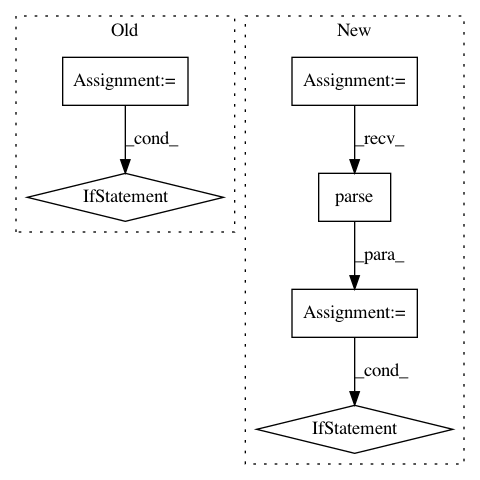

904e72663b634ce65641c3c99e2219e91aefc671,hyperspy/misc/date_time_tools.py,,update_date_time_in_metadata,#Any#Any#,96
Before Change
time_zone = None
if isinstance(dt, str):
sp = dt.split("T")
date = sp[0]
time = sp[1]
if "+" in sp[1]:
time = "%s" % sp[1].split("+")[0]
time_zone = "+%s" % sp[1].split("+")[1]
elif "-" in sp[1]:
time = "%s" % sp[1].split("-")[0]
time_zone = "-%s" % sp[1].split("-")[1]
if isinstance(dt, datetime.datetime):
date = dt.date().isoformat()
time = dt.time().isoformat()
if dt.tzname():
After Change
time_zone = None
if isinstance(dt, str):
dt = parser.parse(dt)
if isinstance(dt, np.datetime64):
dt_split = np.datetime_as_string(dt).split("T")
date = dt_split[0]
time = dt_split[1]
if isinstance(dt, datetime.datetime):
date = dt.date().isoformat()
time = dt.time().isoformat()
if dt.tzname():
time_zone = dt.tzname()
elif dt.tzinfo:
time_zone = dt.isoformat()[-6:]
metadata.set_item("General.date", date)
In pattern: SUPERPATTERN
Frequency: 3
Non-data size: 6
Instances
Project Name: hyperspy/hyperspy
Commit Name: 904e72663b634ce65641c3c99e2219e91aefc671
Time: 2017-01-10
Author: eric.prestat@gmail.com
File Name: hyperspy/misc/date_time_tools.py
Class Name:
Method Name: update_date_time_in_metadata
Project Name: pantsbuild/pants
Commit Name: 8479b6a979a0433c9b360c340fca454f03b0ff77
Time: 2016-04-07
Author: nhoward@twopensource.com
File Name: contrib/python/src/python/pants/contrib/python/checks/tasks/checkstyle/checker.py
Class Name: PythonCheckStyleTask
Method Name: get_nits
Project Name: theislab/scanpy
Commit Name: 0d44d1d50138e76bdc120cfacfd40c222e47b79e
Time: 2020-01-09
Author: flying-sheep@web.de
File Name: scanpy/external/tl/_pypairs.py
Class Name:
Method Name: _check_import